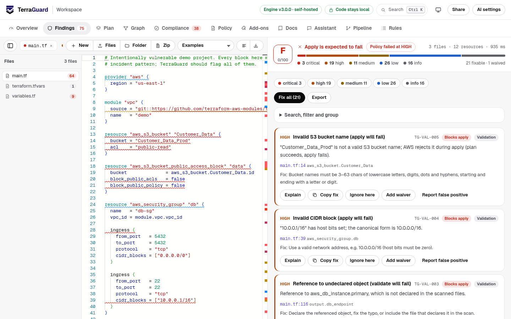
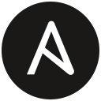

The plan looks fine
terraform plan checks syntax and computes a diff. It will happily plan a public bucket, a database open to the internet or a password in the code.
Open-source infrastructure guardrails
TerraGuard checks Terraform, Kubernetes, CloudFormation, ARM, Dockerfiles, CI pipelines and more for misconfigurations, apply-time errors, destructive changes and cost. It explains every finding and fixes many of them automatically. It runs in your browser, editor, CI, AI agents and your cluster.

Works with

AnsibleThe problem, in plain words
Terraform turns code into real cloud resources. Most mistakes are visible in that code, but nothing looks for them until it is too late.
terraform plan checks syntax and computes a diff. It will happily plan a public bucket, a database open to the internet or a password in the code.
An invalid bucket name fails only when the cloud API rejects it, halfway through apply. One renamed attribute quietly replaces a database and its data.
In production, in an incident, or in an audit. The same fix takes a minute in the editor and days afterwards.
Get started
Open the workspace, paste or drop your Terraform, and get findings, fixes and a will-it-apply verdict. Nothing to install, nothing uploaded.
Try TerraGuard 2CLI binary, VS Code, pre-commit, GitHub Actions, GitLab, Jenkins, Docker, and an MCP server for AI coding agents.
Install and integrate 3One container inside your network: web app, HTTP API, your own AI models, audit log and metrics. Works fully air-gapped.
Deploy privatelyOne engine, every layer
Each format is read into one resource model, so the same policy, waivers, gate, outputs and integrations cover your whole stack.
Code, tfvars, Terragrunt, plan JSON and .tf.json. Variables resolved, provider schemas and AWS API values checked without init.
Manifests, Helm charts and Kustomize overlays. The same rules also cover the Terraform kubernetes provider, and an admission webhook enforces them in the cluster.
Templates in YAML or JSON with parameters and intrinsic functions resolved, plus the Serverless Framework.
Templates with parameters, variables, nested deployments and child resources; Bicep compiled with --bicep.
Dockerfiles with multi-stage builds, and docker-compose services, volumes and networks.
GitHub Actions, GitLab CI, Azure Pipelines, CircleCI and Bitbucket: script injection, unpinned actions, token scope, risky triggers.
Playbooks and role tasks: cloud modules for AWS, Azure and Google, shell and download hygiene, secrets.
Authentication on every operation, transport, credential placement, deprecated OAuth flows and input limits.
Pulumi YAML programs and stack exports, Crossplane managed resources and compositions, and Google Deployment Manager configs, mapped to the same cloud rules.
Who it helps
One policy file for every repository and format, waivers with an owner and an expiry, Pulse reports on who follows the standards.
Findings while you type in VS Code, safe auto-fixes, and a will-it-apply verdict before you open the pull request.
Attack paths across resources, SARIF in code scanning, compliance mapping, and Rego or YAML policies you already have.
The monthly cost change of every plan in the pull request, offline, with your own prices and a budget gate.
The admission webhook refuses privileged or exposed workloads with the same rules CI already ran.
The MCP server gives agents scan, fix, cost and policy tools, and verifies any change they propose before it is kept.
Try it here
The real engine runs in this page as WebAssembly. Nothing is uploaded and no account is needed. Edit the example or paste your own.
What makes it different
Predicts validate and apply failures, including wrong module inputs, with no init and no credentials.
AI fixes and AI-drafted rules are kept only after the deterministic engine verifies them.
Describe a rule in a sentence. It becomes a validated, testable rule that runs without AI.
A live graph of VPCs, subnets, NAT gateways, load balancers and databases across 14 providers, with attack paths.
Agents use your team's TerraGuard by URL, token-protected, with no access to the server's disk.
Runs in the browser with nothing uploaded, or fully air-gapped on your own network.
Explore
How Terraform works, where each stage breaks, and how TerraGuard catches it earlier.
Read moreWhy AI only proposes and the engine decides. Try it in three steps with a free key.
See the demoInheritable policy packs, conditional rules, budgets, baselines and expiring waivers.
Write a policyHow it relates to Checkov, Trivy, TFLint, OPA and others, including where they are stronger.
Compare toolsVS Code, MCP for AI agents, GitHub, GitLab, Jenkins, pre-commit and Docker.
InstallYour laptop, your CI or your own network. Air-gapped installs, any AI model, audit logs and metrics.
Deploy privatelyPaste a file or drop a folder. Nothing is uploaded.
How Terraform works, and where it breaks
Most incidents come from issues that are visible in the code but only surface during apply, in production or in an audit. TerraGuard moves each check to the earliest stage that can catch it.
You describe infrastructure in HCL: resources, variables, modules and providers.
Terraform downloads providers and modules and connects to the state backend.
terraform validate checks syntax and references.
Terraform compares code with state and real infrastructure and proposes a diff.
A pull request is reviewed by people and pipelines.
Terraform calls cloud APIs to create, change and delete resources.
Infrastructure drifts, audits arrive, and many teams own many modules.
See what is wrong and how to fix it while typing, not after a failed pipeline.
Turn standards into checks, roll them out without blocking legacy code, and measure adoption.
Consistent reviews, exceptions with an audit trail, and evidence mapped to frameworks.
Read AGENTS.md, call the MCP tools, and have every change verified before it lands.
How it works
A single Go engine parses Terraform with HashiCorp's own HCL parser, evaluates deterministic rules, and produces the same result in every environment.
Time saved
The same issues are caught either way. The difference is when, and how many people and pipeline runs it takes.
Without TerraGuard
Feedback arrives after review and apply. Each miss costs another pipeline run and another review.
With TerraGuard
Feedback arrives in milliseconds, in the editor. Reviewers see only what still needs a human decision.
How AI is used
Language models are good at explaining and rewriting code, but their output varies. TerraGuard uses them only where that is safe, and verifies every proposed change with the deterministic engine before it is kept.
Demo in three steps
The key stays in your browser and is sent only to the provider you pick. No AI at all? Every other feature still works.
Either works. Both have free tiers.
Open the workspace, then AI settings. Choose Groq or Gemini, paste the key and save. Prefer privacy? Choose Local model and point it at Ollama.
Open workspace and AI settingsThe vulnerable example loads automatically. Click AI fix (verified) on the Overview tab, then read the Activity panel: the engine shows whether it accepted or rejected the change, and how the risk moved.
Also try: Explain top risks, Write terraform tests, Explain plan with AI, and AI review for issues rules cannot see. The CLI equivalent is terraguard agent . --write with the key in .env.
terraform test files and modulesThe engine decides. evals/llmeval measures how often models alone miss or invent issues.
terraguard agent examples/insecure with a free Groq model.
| Option | Examples | Cost | Where code goes |
|---|---|---|---|
| No AI | Every scan, fix, policy and gate works without a model | $0 | Nowhere |
| Free hosted | Groq, OpenRouter free models, Gemini free tier | $0 | The provider you choose |
| Paid hosted (opt-in) | OpenAI, Anthropic, Azure OpenAI, AWS Bedrock, Google Vertex AI | Your contract | Your tenant, under your data agreements |
| AI gateway | LiteLLM, Cloudflare AI Gateway, Kong, any internal OpenAI-compatible proxy | Your choice | Your gateway, with your logging and routing |
| Local or on-premises | Ollama, LM Studio, vLLM on your GPUs | $0 | Never leaves your network |
Paid providers are used only when you configure them. Any OpenAI-compatible endpoint works, with custom auth headers for gateways such as Azure OpenAI. Whatever the model, the engine verifies every AI-proposed change before it is kept.
Policy-as-code
One .terraguard.yml drives the browser, editor, CLI, pre-commit hook, CI and agents. Organizations publish a baseline once; teams inherit it and adjust.
Type "every production database keeps 14 days of backups". AI drafts one rule; the engine checks it, refuses anything that could weaken your policy (disables, waivers, built-in IDs, rules that match everything), and shows exactly which resources it would flag before you add it. From then on the rule runs without AI, deterministically, in every surface.
terraguard policy suggest "every database keeps 14 days of backups"
# team-payments/.terraguard.yml extends: [https://example.com/org-baseline.yml] fail_on: MEDIUM max_findings: { HIGH: 0, MEDIUM: 10 } # risk budget severity_overrides: { "TG-AWS-RDS-*": CRITICAL } custom_rules: - id: ORG-PROD-001 title: Production databases are multi-AZ with 14+ days of backups owner: data-platform resource_types: [aws_db_instance] where: [{ attribute: tags.env, equals: prod }] assert: - { attribute: multi_az, equals: true } - { attribute: backup_retention_period, min: 14 } waivers: - rule: ORG-EC2-001 resource: aws_instance.legacy_batch reason: Pinned to m5 until the Q1 migration approved_by: payments-lead expires: "2027-03-31"
extends, from files or https.where filters and multi-condition assert: equals, in, matches, contains, min, max and more.terraguard policy test runs expect/forbid fixtures. A JSON Schema gives editor autocompletion.Compare
TerraGuard covers the controls of the major scanners in one engine and adds validation, plan risk, cost, verified fixes and zero-install use.
| TerraGuard | Checkov | Trivy (tfsec) | TFLint | terraform validate | |
|---|---|---|---|---|---|
| Runs in the browser, no install | Yes | No | No | No | No |
| Formats | Terraform, OpenTofu, Kubernetes, Helm, Kustomize, CloudFormation, SAM, Serverless, ARM, Bicep, Dockerfile, Compose, Ansible, OpenAPI, 5 CI systems | Similar, plus SCA and secrets | Terraform, CloudFormation, Kubernetes, Helm, Dockerfile, ARM | Terraform | Terraform |
| Values the cloud API rejects | 1,322 AWS arguments | No | No | Yes, deepest | No |
| What was checked, per resource | Coverage report: checks run, passed, failed, types with no rules | Passed checks list | No | No | No |
| Kubernetes admission control | Built in | No | Via operator | No | No |
| Security policy breadth | 1,688 rules, each checked against the reference fixtures | 1,000+ policies | Hundreds of checks | Correctness focus | None |
| Your own policies | YAML rules, Checkov-format graph YAML, Rego (Conftest style) | Python, YAML | Rego | Go plugins | No |
| Cost of a plan | AWS, Azure, Google; usage file; budget gate; offline | No | No | No | No |
| Apply-time validation | Common failures | No | No | Deep, via provider rulesets | Syntax and references, needs init |
| Plan destroy and replace risk | Yes, with cause | Security checks only | Security checks only | No | No |
| Drift explained from the plan | Each resource and the attributes that changed | No | No | No | Plan shows the diff |
| Keeps other tools' ignore comments | checkov:skip, trivy:ignore (mapped rules) | Own syntax | Own syntax | Own syntax | No |
| Permission preflight (IAM) | Opt-in, simulated, read-only | No | No | No | No (apply time only) |
| Quota and global-name preflight | Opt-in, live, read-only | No | No | No | No (apply time only) |
| Provider argument checks | Every argument, bundled AWS, Azure and Google schemas, no init | No | No | Yes, via rulesets | Yes, after init |
| Local module input checks | Unknown and missing inputs, no init | No | No | No | Yes, after init |
| Visual resource graph | Icons per resource, attack paths | No | No | No | terraform graph (DOT text) |
| Cross-resource checks | Attack paths and 177 graph policies | Graph checks | No | No | No |
| Auto-fix | Yes | Not in open source | No | Some rules | No |
| Waivers with expiry | Reason, approver, expiry | Skip comments | Expiry in ignore comments | Ignore comments | No |
| Optional AI, including local models | Yes | Paid platform | No | No | No |
| SARIF, JUnit, pre-commit, VS Code | Yes | Yes | Yes | Yes | No |
Based on public documentation as of November 2026. Ideas adopted from these tools: VS Code diagnostics and pre-commit hooks (Checkov, pre-commit-terraform), JUnit output (Checkov, Trivy), documented-variable checks (TFLint). Provider-schema validation (TFLint) inspired the --schema check. Corrections are welcome as a GitHub issue.
| Tool | What it is best at | How TerraGuard relates |
|---|---|---|
| Checkov (Prisma Cloud) | The largest open policy library across many IaC formats | Use both. TerraGuard adds plan risk, verified fixes, diff-aware review and a zero-install browser experience |
| Trivy, formerly tfsec (Aqua) | One scanner for containers, dependencies and IaC | TerraGuard goes deeper on the Terraform workflow: validation, plans, waivers with approvers, adoption reporting |
| TFLint | Provider-aware correctness, such as invalid instance types | Complementary. Provider-schema validation is on the TerraGuard roadmap |
| KICS (Checkmarx), Snyk IaC | Broad IaC scanning inside larger security platforms | TerraGuard is free, self-hostable and focused on developer feedback before merge |
| OPA and Conftest | General-purpose policy in Rego, for any JSON | TerraGuard policies are YAML that teams can read and test without learning Rego. Rego import is planned |
| HashiCorp Sentinel, Spacelift, env0, Scalr | Policy and orchestration inside managed Terraform platforms | TerraGuard runs before any platform: in the editor, pre-commit and PR, and works with all of them |
| Infracost | Cost estimates for Terraform changes | Complementary. TerraGuard flags cost traps; Infracost prices them |
| terraform validate and plan | Ground truth from Terraform itself | TerraGuard gives earlier feedback without init or credentials, then reviews the real plan |
--schema checks argument names, required and read-only arguments and block limits, but not every allowed value.Install and integrate
Every option below runs the same engine and reads the same .terraguard.yml.
A single static binary with no dependencies. Pick your platform to see its install command.
# or, with Go 1.26.10+ installed go install github.com/Karthik-099/TERRAGUARD/cmd/terraguard@latest
Scan any folder without installing anything, or run the full web app and API on your own network.
docker run --rm -v "$PWD:/src" -w /src ghcr.io/karthik-099/terraguard scan . # self-hosted web app and API on http://127.0.0.1:8080 docker run --rm -p 127.0.0.1:8080:8080 --env-file .env ghcr.io/karthik-099/terraguard
Findings as you save, quick fixes and inline ignores. It calls the CLI, so install that first.
code --install-extension terraguard-2.0.0.vsix
SARIF annotations, a sticky PR comment and a policy gate. Use review to gate only on what a PR introduces, or pulse for adoption reports.
- uses: actions/checkout@v4
with: { fetch-depth: 0 }
- uses: Karthik-099/TERRAGUARD@v2.0.0
with:
command: review # scan | review | pulse
path: infra
fail-on: HIGH
The workspace's Pipeline tab generates a complete workflow with OIDC, plan analysis and an approval gate.
Ready-made templates use the Docker image. GitLab shows findings in the merge request through Code Quality and JUnit reports.
include: - remote: https://raw.githubusercontent.com/Karthik-099/TERRAGUARD/v2.0.0/templates/gitlab-ci.yml
Jenkins: copy templates/Jenkinsfile. Any other CI can use the JSON, SARIF or JUnit output and the exit code.
HCP Terraform and Terraform Enterprise: run terraguard serve with TERRAGUARD_RUN_TASK_HMAC_KEY and add /api/run-task as a post-plan run task. Every plan is checked before apply.
Each template runs the TerraGuard image and publishes JUnit results to that tool's test view. Atlantis checks the plan before anyone can apply it. Copy the template from templates/.
# AWS CodeBuild: templates/aws-codebuild-buildspec.yml # Azure Pipelines: templates/azure-pipelines.yml # Google Cloud Build: templates/cloudbuild.yaml # Bitbucket: templates/bitbucket-pipelines.yml # CircleCI: templates/circleci-config.yml # Atlantis: templates/atlantis.yaml terraguard scan . --junit terraguard-junit.xml --markdown terraguard.md
To run TerraGuard itself as a private service in AWS, Azure, Google Cloud or Kubernetes, see Run it anywhere below.
Stop risky changes before they leave the laptop.
repos:
- repo: https://github.com/Karthik-099/TERRAGUARD
rev: v2.0.0
hooks:
- id: terraguard
- id: terraguard-fix # optional
Claude Code, Cursor and other MCP clients can scan, fix, document and write AGENTS.md for Terraform before proposing changes.
claude mcp add terraguard -- terraguard mcp
# any MCP client (mcp.json)
{ "mcpServers": { "terraguard": { "command": "terraguard", "args": ["mcp"] } } }
Tools: scan_terraform (every format), fix_terraform, estimate_cost, generate_docs, generate_agents_md, validate_rule, list_rules.
Remote: terraguard serve also serves the same tools at /mcp over HTTP, protected by the server token. Agents use the team's instance by URL; remote calls accept inline files only and never touch the server's disk.
claude mcp add --transport http terraguard https://terraguard.internal/mcp \ --header "Authorization: Bearer $TERRAGUARD_SERVER_TOKEN"
One URL for a team: the web app, an HTTP API for internal tools, keys kept on the server, an audit log and Prometheus metrics.
cp .env.example .env # any model: free, paid, gateway or local
docker compose up -d # http://127.0.0.1:8080
curl -s -X POST localhost:8080/api/scan -d @input.json # {"files": {"main.tf": "..."}}
curl -s localhost:8080/metrics # Prometheus
The full workspace on your machine with a folder loaded straight from disk: no upload, no install beyond the CLI, the same on Linux, macOS and Windows. It listens on loopback only, needs a one-time token, and reads files without ever writing them.
terraguard init # policy, CI workflow and pre-commit in one step terraguard ui # the current folder terraguard ui ~/code/platform # any folder; edits are picked up when you switch back to the window
Neovim, JetBrains, Zed, Helix, Emacs and Sublime show TerraGuard findings as you type, following your policy, with quick fixes for Terraform.
-- Neovim
vim.lsp.start({ name = "terraguard", cmd = { "terraguard", "lsp" } })
# Helix, languages.toml
[language-server.terraguard]
command = "terraguard"
args = ["lsp"]
Refuse privileged, exposed or unsafe workloads at the cluster with the same rules CI ran. Findings at or above the threshold deny the request with the reasons; lower ones come back as warnings in kubectl.
terraguard serve --addr 0.0.0.0:8443 --tls-cert tls.crt --tls-key tls.key \ --admission-policy .terraguard.yml # ValidatingWebhookConfiguration: clientConfig.url https://terraguard.svc:8443/api/k8s/validate # TERRAGUARD_ADMISSION_FAIL_ON=HIGH (default); TERRAGUARD_SERVER_TOKEN to require a token
Extensions and agents
terraguard:ignore comment..terraguard.yml..vsix from the latest release. Open VSX and Marketplace listings are planned.terraguard mcp exposes TerraGuard over stdio.scan_terraform, fix_terraform, generate_docs, generate_agents_md, validate_rule, list_rules.terraguard serve's HTTP API.Run it anywhere
Same engine everywhere. It never needs the internet, and AI is optional and your choice. Useful for one developer or a whole company.
WebAssembly in the page. Code stays on the device.
One binary or the Docker image on your own runners.
terraguard serve inside your VPC behind SSO.
The image bundles the editor and assets; pair it with a local model.
Private subnets behind an internal HTTPS load balancer; secrets from SSM.
deploy/aws
Internal environment inside your VNet; no external ingress.
deploy/azure
Internal-only ingress; invoker limited to your group.
deploy/gcp
The site is static WebAssembly: serve it from Cloudflare Pages on your domain, with Access in front for your team. Guide in deploy/cloudflare-pages.
EKS, AKS, GKE or on-premises: non-root, read-only, NetworkPolicy.
deploy/helm/terraguard
Each template is Terraform validated against the real provider and scanned by TerraGuard in CI. CI templates for AWS CodeBuild, Azure Pipelines, Google Cloud Build, Bitbucket, CircleCI and Atlantis are in templates/.
Loading documentation
Architecture
Phase 1 proved developers want structured findings with fixes. Phase 2 makes them reliable enough to block a merge.
Phase 1 · April 2026
Python Flask API, one HTML page, GPT-4o.
Could not be trusted as a CI gate
Phase 2 · Now
Go engine on HashiCorp's HCL parser, compiled to WebAssembly.
Fast, free, and safe to gate merges
Phase 3 · Next
Schemas, AWS, Azure and Google API values, 18 formats, offline vulnerability scanning, drift, Rego, graph policies and cost have landed; next:
Contributions welcome
hashicorp/hcl/v2 gives exact syntax, semantics and line numbers.terraform test files, reviewing a plan in plain language.evals/llmeval measures the gap.Efficiency
Numbers from go test -bench and the CLI on a laptop. Reproduce them with make test.
Open source
TerraGuard is not a company or a product for sale. It is a learning project. I have worked in a tech firm, so I know some things about infrastructure, but certainly not everything, and I am building this to learn how these tools can be made better. It is free and MIT licensed, I am not asking for money, and it does not have its own domain yet; it lives on GitHub Pages for now.
If you know a better way to do something here, I would genuinely like to learn from you. A star, an issue, a review of the architecture, a correction or a new rule are all welcome, and none are expected.
make test evalsLocal setup in two commands. A new rule is about 20 lines plus two eval cases.
Contributing guideDescribe the misconfiguration or apply failure with a minimal snippet.
Open a requestQuestions, feedback and roadmap ideas in GitHub Discussions.
Join the discussionQuestions and how-to in GitHub Discussions.
AskWith your version and the smallest input that shows it.
Bug reportTell us the rule ID and why the configuration is safe.
False positiveReport vulnerabilities privately, never in a public issue.
Security policyPaste the output of terraform plan -out tfplan && terraform show -json tfplan. TerraGuard flags destructive changes and checks every rule against the resolved values.
Fill colour is the cloud provider, the icon is the kind of resource, and the ring is the worst finding on it. Attack paths glow red. Click a resource to focus its connections and open its code.
Engineering standards as code (.terraguard.yml): failure threshold, severity overrides, waivers with expiry and approver, and custom rules. The CLI, Action, VS Code extension and server use the same file.
AI drafts one rule; the engine validates it and shows what it would flag before you add it. Only resource type names are sent, never your code. Needs AI settings.